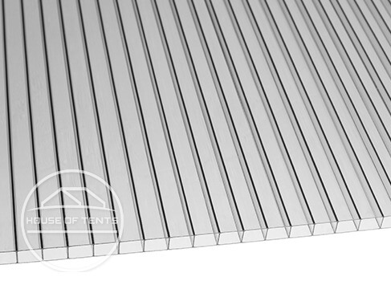

Weatherproof & stable
Aluminium and steel frames
All models include a waterproof roof
Accessories available to increase stability
Weatherproof gazebos: waterproof, stable & UV-resistant
Whether pop up gazebos, garden gazebos or marquees - all gazebo models from House of Tents are of very high quality. They are an effective shelter from harmful UV rays, rain, and wind. Find your favourite gazebo for a summer party, outdoor wedding, or to leave standing in your home garden all year round without hesitation!
Roof materials in comparison
House of Tents offers you a wide range of gazebos in different sizes, frames and roof materials. Whether polycarbonate, polyester, PE or PVC canopies - what exactly are the properties of these materials? How weatherproof is which model?
Polycarbonate
Advantages:
- Robust & rigid
- High heat resistance
- Protects well in case of hail
- Highly weather resistant
- 100% waterproof
Our products with polycarbonate
Garden gazebosPolyester

Advantages:
- Lightweight & inexpensived
- Dries quickly after rain
- Doesn't require much maintenance
- Highly abrasion resistant
- With PVC coating 100% waterproof
Our products with polyester
Pop up gazebos Garden gazebosPVC

Advantages:
- Durable & strong
- Flame retardant
- Can be repaired in an emergency
- Similar to the feel of a truck tarpaulin
- 100% waterproof
Our products with PVC
Marquees Garden gazebosPolyethylene (PE)

Advantages:
- Light & inexpensive
- Space-saving in transport
- Enables quick assembly and dismantling
- Easy to handle
- 100% waterproof
Our products with PE
MarqueesWhich gazebo for which weather?

For protection from the sun
All high quality gazebos at House of Tents have a high UV resistance - ideal for hot summer days. If UV protection 30+ is enough for you, then the Rendezvous and Sunset steel garden gazebos are just right. If you would like increased protection against UV radiation, then we recommend either our PE marquees, our garden gazebos in the Premium and Deluxe lines, or our Economy steel and Economy aluminium pop up gazebos. All these gazebo tents offer great UV protection of SPF 50+. For the ultimate in sun protection all of our high quality PVC (Profi-line) marquees, as well as the
For protection from the rain and snow
All gazebos at House of Tents are 100% waterproof. But especially in winter, a season with a lot of wind and heavy rain, the gazebo frame makes all the difference. For example, heavy duty gazebos are more weatherproof than wooden frames. Wooden gazebos are also waterproof, but over time, the wood can rot and splinter. Steel gazebos on the other hand, are very weather-resistant while aluminium gazebos provide the best protection from rust. For garden gazebos that will be standing in one place over winter, we advise choosing a model with a hardtop, as the heavy duty polycarbonate panels can stand up to the worst weather conditions. Depending on the model, they can even withstand snow loads of 50 to 80 kg/m².

Celebrate great parties in the garden regardless of the weather - great quality outdoor canopies allow you to throw parties with less stress. Celebrate birthdays, weddings or host events in your garden. All marquees from House of Tents are 100% waterproof and if you choose a PVC garden tent, you will also be able to enjoy shelter deep into the autumn. To ensure that your product also stands up to strong winds, you will find accessories to increase its stability in our shop. Equip your marquee with a base frame, for example. Thanks to the groundbar frame, the legs of your marquee cannot slip in strong winds, giving it more support. Ground anchors for your patio or garden are also advisable. Tip: A storm has been announced or even snow? Read our magazine article on how to secure your garden tent against rain, snow and wind. This magazine article also presents and compares the various accessories - weights or anchors for soft and hard grounds including concrete, as well as tie down kits.


All pop up gazebos from House of Tents have a robust frame - made of either steel or aluminium. These are available with a square or hexagonal profile. If a gazebo is to be weatherproof, the tarpaulin must also be 100% waterproof. The tarpaulins of our pop up gazebos are available in PVC as well as in PVC-coated high-performance polyester. The special feature that ensures that these tarpaulins are waterproof? All seams are thermo-sealed. The quality of the seams is therefore very high and prevents water from penetrating the pop up gazebo. You will also find a large range of accessories for foldable tents on our site. For an impressive appearance, an awning is particularly recommended. This not only looks very professional, but also protects against rain from the side and low sun. The tarpaulin material of the awning also has a UV protection rating of SPF 80. Tip: Pop up gazebos are an excellent solution for giving shelter and shade wherever you need it. They are easy to erect, which make them the go-to choice as an event shelter at outdoor events. While they can't match the heavy duty weather resistance of other gazebo products, it's easy to fold the structure up and pop a gazebo cover over the top. The cover will protect the frame and canopy from the worst weather conditions.


Garden gazebos are available at House of Tents with a
tarpaulin canopy as well as with a fixed roof made of
polycarbonate panels. Both shelters are 100% waterproof,
stable and UV-resistant. However, when the cold season
arrives, we recommend that you remove the tarpaulin canopy and
put it into storage. This is because strong temperature
fluctuations can damage the polyester and, in the worst case,
lead to breaks in the tarpaulin material. The hardtop fixed
roof, can remain outside in the garden throughout the winter.
All garden gazebos are delivered including sidewalls. With the
sides, you can close the waterproof gazebo completely or leave
it open. The side wall panels can be hung loosely at the leg
poles, with sides connecting to each other with
water-resistant zips. We recommend that you close the sides
overnight to ensure wind can't collect underneath the gazebo
canopy.
Tip:
There's nothing better than enjoying a small
get-together with friends on a warm summer evening on the
patio. Even better if you have a canopy over your hot tub. It
can all be ruined by mosquitos and midges though. Side walls
can be replaced with great quality mosquito nets with a fine
mesh fabric from our shops to keep bugs at bay. The Sunset
Premium and Deluxe models have a double rail system so the
mosquito nets can be attached alongside the side walls.


FAQ: Frequently asked questions
You'll be hard pressed to find a large variety of sizes of gazebo, starting from 2x3 metre models, with 3x3m gazebos being our biggest sellers. Marquees extend to a maximum size of 8x36m. For pop up gazebos our product range extends to 5x5m large gazebos. Garden gazebos are available as either 3x3m or 3x4m structures.
The 3x3 m gazebo for example, is available at House of Tents in fifteen different colours. Pop up gazebos come in the widest variety of colours ranging from white to grey to intense colours such as petrol, orange or purple. For trade fairs or market stalls, plain colours such as white and grey are particularly popular. Garden gazebos feature classic tones that complement the outdoor environment such as stone and loft grey. Marquees meanwhile come in white or dark green. A decorative striped pattern is also possible with blue, grey, green or red stripes combining with white.
Yes! The sides of all of our gazebos and marquees, just like the canopies themselves, are completely waterproof. Seams are welded with a waterproofing plastic sheet that ensures that no water will enter the shelter from the sides. The side panels of the marquee gazebos, for example, are made of high quality PVC and are 100% waterproof. You will also find gable sides and side panels with built-in zip doors in our range of accessories.
House of Tents - we tents

Our expert customer service - always there for you!
Do you have any questions about our showerproof gazebos? Are you looking for a grey folding tent, for example, that will stay firmly on the ground even in a storm? Or would you simply like some personal advice? Feel free to call our expert customer service, we will be happy to advise you and give you all the answers to your questions!